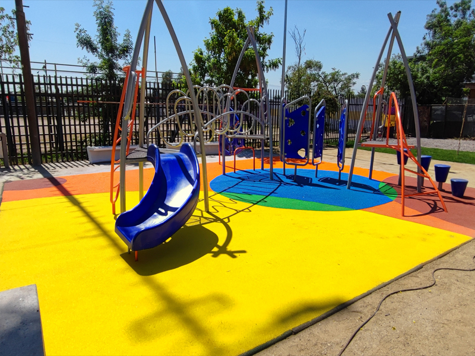
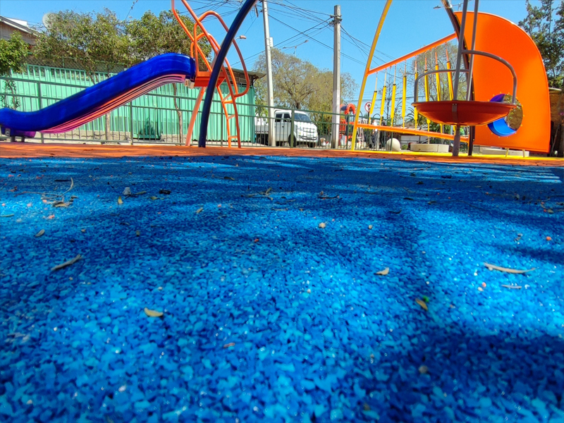

Pavimento continuo · Santiago y Región Metropolitana
Caucho EPDM In Situ en Santiago
Pavimento continuo para parques infantiles, canchas y áreas recreativas · Certificable EN 1177
 Certificable EN 1177
Colores personalizados
Certificable EN 1177
Colores personalizados
El pavimento más seguro para parques infantiles y áreas recreativas en Santiago
El caucho EPDM in situ es el estándar internacional para superficies seguras en zonas infantiles. Se aplica directamente en obra formando una superficie continua, sin juntas, con colores vibrantes y propiedades de absorción de impacto certificables según la norma EN 1177.
Instalamos en parques, colegios, plazas, condominios y canchas en toda la Región Metropolitana y Chile.
Cotizar caucho EPDM — gratisCertificable EN 1177
Absorción de impacto certificable para zonas de juego infantil.
Sin juntas
Superficie continua sin bordes ni uniones que acumulen suciedad.
Colores vibrantes
Personalización de colores y diseños para cada proyecto.
Sin mantenimiento
Limpieza periódica con agua. Sin sellado ni tratamientos.
Dónde se aplica
Usos del caucho EPDM in situ en Santiago y la RM
El caucho EPDM in situ es versátil. Se adapta a cualquier forma y superficie, desde pequeños patios de jardines infantiles hasta grandes parques públicos. Estos son sus usos principales en Santiago:
Parques y plazas infantiles
El uso más frecuente del caucho EPDM in situ en Santiago. Reemplaza la peligrosa gravilla o el concreto bajo los juegos infantiles por una superficie que amortigua golpes, es antideslizante y permite diseños con formas y colores. Certificable EN 1177.
Ver especificaciones EPDM
Patios de colegios y jardines infantiles
Los establecimientos educacionales de Santiago encuentran en el caucho EPDM la solución para patios seguros, sin barro y con colores que estimulan el juego. Trabajamos con colegios públicos y privados de toda la RM.
Ver proyectos en colegios
Condominios y zonas recreativas
Los condominios de Santiago con áreas de juego para niños usan el caucho EPDM para crear superficies seguras y estéticas. Posibilidad de diseñar con múltiples colores e incorporar figuras o mapas del área.
Ver opciones para condominiosPrecios referenciales 2025
¿Cuánto cuesta instalar caucho EPDM in situ en Santiago?
El precio del caucho EPDM in situ varía principalmente según el espesor (determinado por la norma HIC y la altura de caída de los equipos), los colores elegidos y el diseño.
EPDM Base SBR
- Base SBR (caucho reciclado)
- Capa EPDM de color
- Espesor 3 cm base
- Color sólido
- Parques y zonas recreativas
EPDM Bicolor con diseño
- Base SBR + EPDM multicolor
- Diseño con 2 o más colores
- Figuras o zonas delimitadas
- Certificable EN 1177
- Parques infantiles y colegios
EPDM Virgen Premium
- EPDM virgen en toda la superficie
- Colores más vibrantes y duraderos
- Mayor resistencia UV
- Alta personalización
- Proyectos institucionales y municipales
⚠️ Precios referenciales sin IVA, orientativos y sujetos a cotización. El precio final se confirma tras visita técnica gratuita.
Proyectos reales
Instalaciones de caucho EPDM in situ en Santiago y Chile



Por qué elegirnos
Lo que hace diferente la instalación de caucho EPDM de MAMKAM
Diseño del proyecto según norma HIC
Antes de instalar, calculamos el espesor necesario según la altura crítica de caída de los equipos (norma HIC), para garantizar que el pavimento absorba los impactos requeridos por la norma EN 1177.
Preparación de la base existente
El caucho EPDM in situ se puede instalar sobre radier de concreto o sobre base compactada. Evaluamos el estado de la base y la preparamos correctamente para garantizar adherencia y durabilidad.
Aplicación en capas con maquinaria especializada
Mezclamos el EPDM con el aglutinante PU y aplicamos en capas uniformes. Las figuras, colores y diseños se realizan en el proceso de aplicación con plantillas y separadores.
Curado de 24 a 48 horas antes de habilitar
Una vez aplicado, el pavimento necesita entre 24 y 48 horas de curado según la temperatura y humedad. Entregamos el área habilitada con la documentación del proyecto.
Cobertura
Instalamos caucho EPDM en toda la Región Metropolitana y Chile
MAMKAM instala caucho EPDM in situ en parques municipales, colegios, condominios y canchas en Santiago y toda la Región Metropolitana. También ejecutamos proyectos en otras regiones de Chile.
Parques municipales
Proyectos para municipalidades de la RM. Trabajamos con licitaciones públicas y contratos directos.
Colegios y jardines infantiles
Patios seguros con certificación EN 1177 para establecimientos educacionales.
Todo Chile
Ejecutamos proyectos de caucho EPDM in situ en cualquier región de Chile con desplazamiento de nuestro equipo.
Preguntas frecuentes
Lo que preguntan los clientes sobre caucho EPDM in situ en Santiago
¿Tienes un proyecto de parque o colegio?
Escríbenos por WhatsAppCaucho EPDM in situ en Santiago
Cotiza tu proyecto de caucho EPDM en Santiago hoy
Visita técnica gratuita al sitio. Diseño personalizado de colores. Instalación en toda la RM y otras regiones de Chile.
Cotizar caucho EPDM in situProductos relacionados